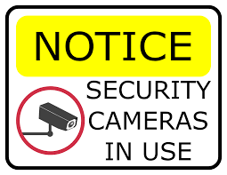

I plan to create a series of works from photography to design to motion graphics about the concept of surveillance and how we behave when we know we are being watched. I have always thought about how god knows that we've been "good". I was always told as a kid that god was watching us at every moment of the day, even when we were sleeping, they knew all the thoughts we had and the things destined for us. When I started questioning my faith I began questioning if god could see me questioning their existence too. Could they read the thoughts in my head? Could they see that my faith was waivering? At some point in high school I stopped believing altogether. I thought that if they couldn't answer any of my very serious prayers then they couldn't see that I didn't believe in them anymore. This project is inspired by all of the different ways we behave when we feel like god is and isn't watching. Do you steal? Have impure thoughts? Think about robbing a bank? Or do you attend church every sunday? Give out bible messages on the street? Or have la Virgen stationed in a special corner of your room? Are we good because god is watching or because we are actually good people? How many people are actually evil? What does it mean to be evil?
